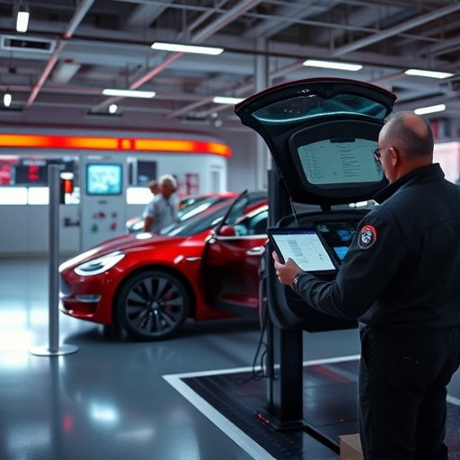
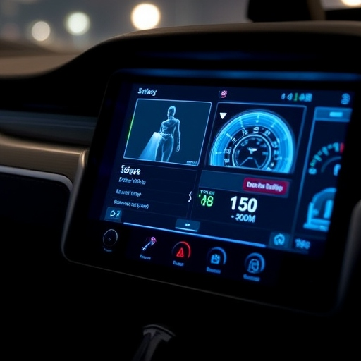

Діагностика

Компанія TeslaDrive допомагає швидко виявити та усунути неполадки, що можуть виникнути в процесі експлуатації. Ми використовуємо передове обладнання для точного визначення проблем та надаємо рішення для їх усунення.
- Оцінка стану батареї та зарядних систем.
- Перевірка роботи електронних систем.
- Діагностика двигунів та трансмісії.
- Тестування та аналіз програмного забезпечення автомобіля.
Наші фахівці проводять діагностику з урахуванням всіх сучасних стандартів та використовують лише сертифіковане обладнання. Всі роботи здійснюються в найкоротші терміни без шкоди для якості.
- Поглиблений аналіз систем електроживлення.
- Оперативна заміна несправних датчиків.
- Рекомендації щодо подальшого обслуговування.
- Детальні звіти про стан вашого авто.
